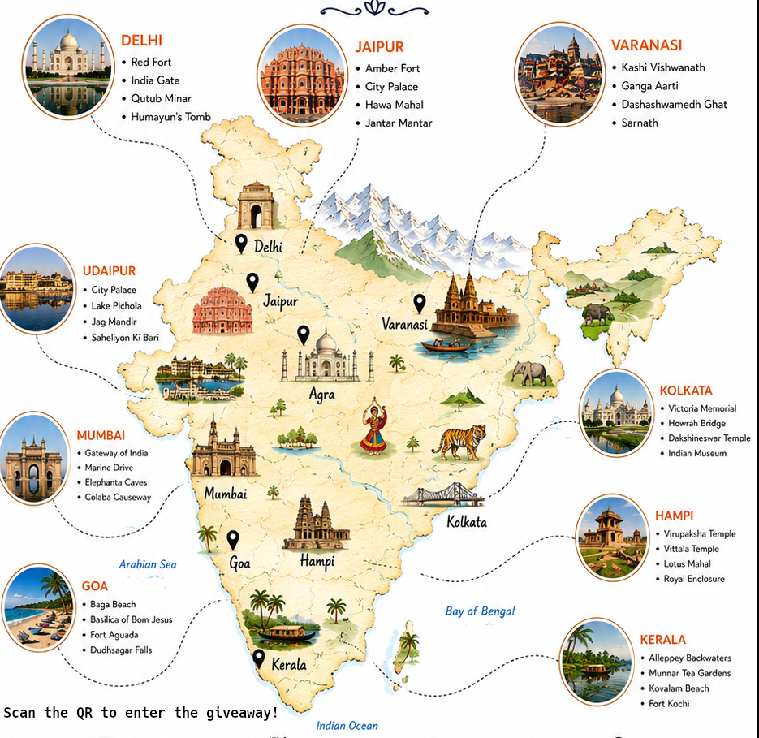

Starting from the Challenge

The supplied image is an India tourist map with the line Scan the QR to enter the giveaway!, but it does not contain a complete QR code that can be scanned. I checked the PNG structure and bit planes, but they did not produce a usable message.
1. Following the organizer's hint
During the challenge, the organizers posted a hint in Discord that pointed to:
Opening that page showed this Base64 string:
SW5JdHt7aDFkMW5nXzFuX2IxdWVfbDFnaDd9Cg==
2. Decoding the string
# decode.py — written for this write-up
import base64
encoded = "SW5JdHt7aDFkMW5nXzFuX2IxdWVfbDFnaDd9Cg=="
print(repr(base64.b64decode(encoded, validate=True).decode()))
The decoded value is:
'InIt{{h1d1ng_1n_b1ue_l1gh7}
'
repr makes the trailing line break visible. The page's value also has an extra opening brace. Removing that extra brace and the final line break gives the expected InIt{...} format.
Final Flag
InIt{h1d1ng_1n_b1ue_l1gh7}
Summary
- Initial image: The visible QR is incomplete, and the checked PNG channels did not yield a message.
- Organizer hint: The Discord hint leads to a page containing Base64.
- Decode: Remove the extra
{and trailing newline from the decoded value.
TACTICAL FLOW MAP
- india_tourist_map.png
- Organizer Discord hint
- ctf.pir4cy.com/giveaway
- Base64 decode
- Normalize InIt{...} → flag
// END OF WRITE UP← Misc write ups